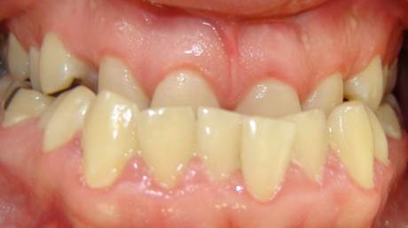
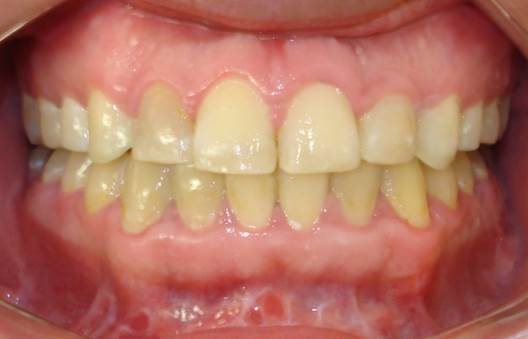
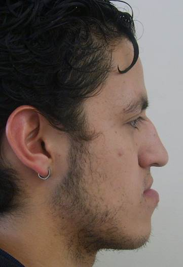
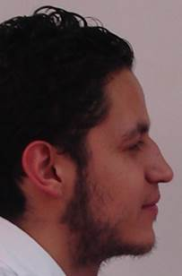

Dental view


CLINICAL CASE · SURGERY
A real clinical case in which surgical treatment was used to correct the anterior bite relationship. Treatment planning is individualized after a complete clinical and radiographic evaluation.




PERSONALIZED TREATMENT
In selected cases, a discrepancy in jaw relationships may require a surgical approach. The goal is to improve bite function and promote more harmonious facial relationships according to the diagnosis and individual patient needs.
Images show a real clinical case. Results may vary according to diagnosis, clinical conditions, and each patient’s individual needs.